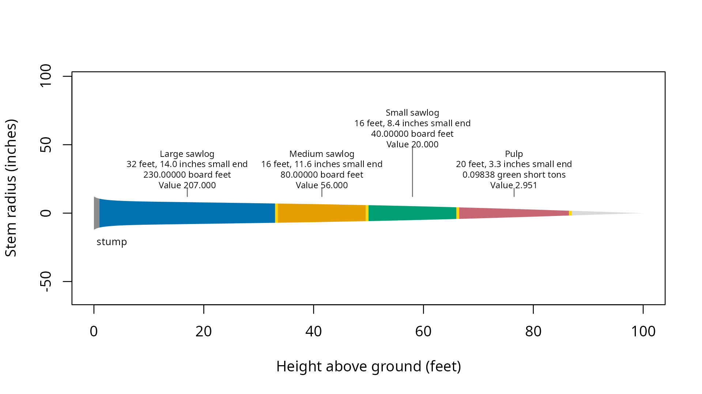

merchandise() selects and scales logs from tree
measurements and product specifications. Product order sets cutting
priority under the default strategy. Prices assign value to the selected
logs without changing that priority.
Tree 5 is a synthetic example with species code 202, diameter at breast height of 20 inches, and total height of 100 feet. Its stored equation is passed explicitly below. Dimensions use inches and feet. Prices are illustrative United States dollars.
## Attach the calculation and data tools
library(merchandiser)
library(dplyr)| tree_id | species code | diameter (inches) | height (feet) |
|---|---|---|---|
| 5 | 202 | 20 | 100 |
The tree’s 20-inch diameter and 100-foot height supply the measurements for the log calculation.
Which products can the tree supply?
## Give long logs with the largest small end limit first priority
large <- product(product = 'Large sawlog', ## product label
min_length = 32, ## feet
max_length = 32, ## feet
min_sed = 12, ## inches
inside_bark = TRUE, ## limits measured inside bark
trim = 0.5, ## feet
volume_unit = 'scribner', ## board feet
price = 900, ## dollars
price_per = 1000) ## board feet
## Accept shorter logs that meet the medium sawlog diameter limit
medium <- product(product = 'Medium sawlog', ## product label
min_length = 16, ## feet
max_length = 16, ## feet
min_sed = 10, ## inches
inside_bark = TRUE, ## limits measured inside bark
trim = 0.5, ## feet
volume_unit = 'scribner', ## board feet
price = 700, ## dollars
price_per = 1000) ## board feet
## Accept smaller sawlogs before assigning wood to pulp
small <- product(product = 'Small sawlog', ## product label
min_length = 16, ## feet
max_length = 16, ## feet
min_sed = 6, ## inches
inside_bark = TRUE, ## limits measured inside bark
trim = 0.5, ## feet
volume_unit = 'scribner', ## board feet
price = 500, ## dollars
price_per = 1000) ## board feet
## Assign remaining eligible sections to pulp by green weight
pulp <- product(product = 'Pulp', ## product label
min_length = 8, ## feet
max_length = 20, ## feet
min_sed = 3, ## inches
inside_bark = TRUE, ## limits measured inside bark
trim = 0.5, ## feet
volume_unit = 'green_ton', ## green short tons
price = 30, ## dollars
price_per = 1) ## green short tonsEach cut occupies the nominal log length plus trim. Scale uses the nominal length, and trim remains in the residual record.
## Offer the stem to sawlog products before pulp
specifications <- products(large, medium, small, pulp)
## Select and price logs using the tree's stored taper equation
result <- merchandise(tree_id = tree$tree_id,
dbh = tree$dbh,
ht = tree$ht,
spcd = tree$spcd,
products = specifications,
model = tree$model)The same specification can be applied to a tree list by supplying measurement vectors and unique tree identifiers. Optional age and pruning measurements are needed only when a product uses those limits.
Which logs were selected?
| product | start (feet) | end including trim (feet) | nominal length (feet) | small-end diameter (inches) | scale (Scribner board feet) | scale (green short tons) | value (dollars) |
|---|---|---|---|---|---|---|---|
| Large sawlog | 1.0 | 33.5 | 32 | 14.017 | 230 | NA | 207.000 |
| Medium sawlog | 33.5 | 50.0 | 16 | 11.643 | 80 | NA | 56.000 |
| Small sawlog | 50.0 | 66.5 | 16 | 8.413 | 40 | NA | 20.000 |
| Pulp | 66.5 | 87.0 | 20 | 3.341 | NA | 0.098 | 2.951 |
The large sawlog contributes 207 dollars at the specified price of 900 dollars per 1000 board feet.
| scale (Scribner board feet) | price (dollars) | price basis (board feet) | calculated value (dollars) |
|---|---|---|---|
| 230 | 900 | 1000 | 207 |
Its 230 board feet supply the scale used in that value calculation.
The scale columns keep board feet and short tons separate. Add board
feet within a scaling rule and short tons within weight products, or add
dollar values across all priced products. Do not sum
result$logs$scale across these products because its rows
use incompatible units.
The log record also includes physical end diameters and the diameter used for board foot scaling. Physical ends include trim when checking eligibility, while scale describes the nominal log body. Those columns make it possible to check a particular cut against the specification that accepted it.
What happened to the rest of the stem?
The residual record accounts for stem sections outside the scaled log bodies. Its causes distinguish the stump and top from trim, length limits, diameter limits, and located defects. Residual heights use the same ground reference as the log heights.
| tree_id | start (feet) | end (feet) | cause |
|---|---|---|---|
| 5 | 0.000 | 1.000 | stump |
| 5 | 33.000 | 33.500 | trim |
| 5 | 49.500 | 50.000 | trim |
| 5 | 66.000 | 66.500 | trim |
| 5 | 86.500 | 87.000 | trim |
| 5 | 87.000 | 88.273 | short_remainder |
| 5 | 88.273 | 100.000 | top |
The first residual ends at 1 foot, the stump height used for cutting.
Did the calculation use valid inputs?
## Check for trees with a reported condition
result$status
#> [1] tree_id status name description
#> <0 rows> (or 0-length row.names)The status table has 0 rows, so this calculation reports no tree conditions. A tree without eligible logs can still have valid inputs. Check residual causes when the question is why wood was not assigned to a product.
## Inspect the inputs recorded with the result
record <- assumptions(x = result)| tree_id | assumption | spcd | model | value (see unit column) | unit | basis | product | source |
|---|---|---|---|---|---|---|---|---|
| 5 | species_model | 202 | F00FW2W202 | NA | NA | NA | NA | caller_model |
| 5 | stump_height | 202 | F00FW2W202 | 1 | feet | NA | NA | stump_ht |
The stump_height row records 1 foot from
stump_ht. The species_model row records the
selected equation and whether it came from the caller or the species
default. A bark_ratio row, when needed, records the ratio,
its basis, and its source. These are recorded inputs, not adjustments to
the selected logs.
Where are the cuts on the stem?
## Draw the selected logs and unassigned stem sections
plot(result)
The drawing places the large sawlog at the base, starting above the 1 foot stump.
What is the tree’s biomass?
Biomass estimates come from tree measurements independently of the product list. The aboveground total includes stem wood, stem bark, and branches. Foliage is returned separately, and roots are outside this total.
## Estimate dry biomass and carbon for the same tree
mass <- biomass(dbh = tree$dbh,
ht = tree$ht,
spcd = tree$spcd)| dry mass excluding foliage (tonnes) | carbon (tonnes) | carbon dioxide equivalent (tonnes) |
|---|---|---|
| 1.302 | 0.672 | 2.463 |
The tree contains 1.302 metric tonnes of dry aboveground biomass excluding foliage.
The biomass columns describe overlapping components, so do not sum every mass column. Use Biomass and carbon to select a nonoverlapping total, or Working a tree list to carry these calculations across stands.